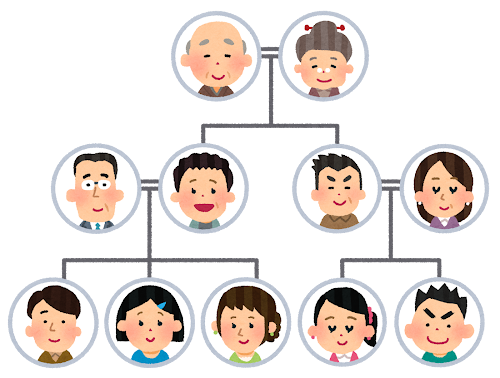
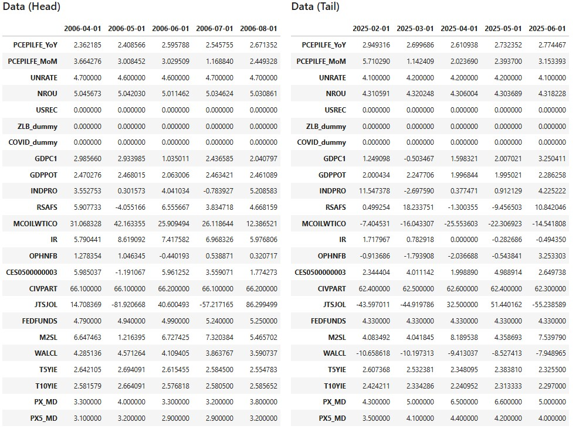
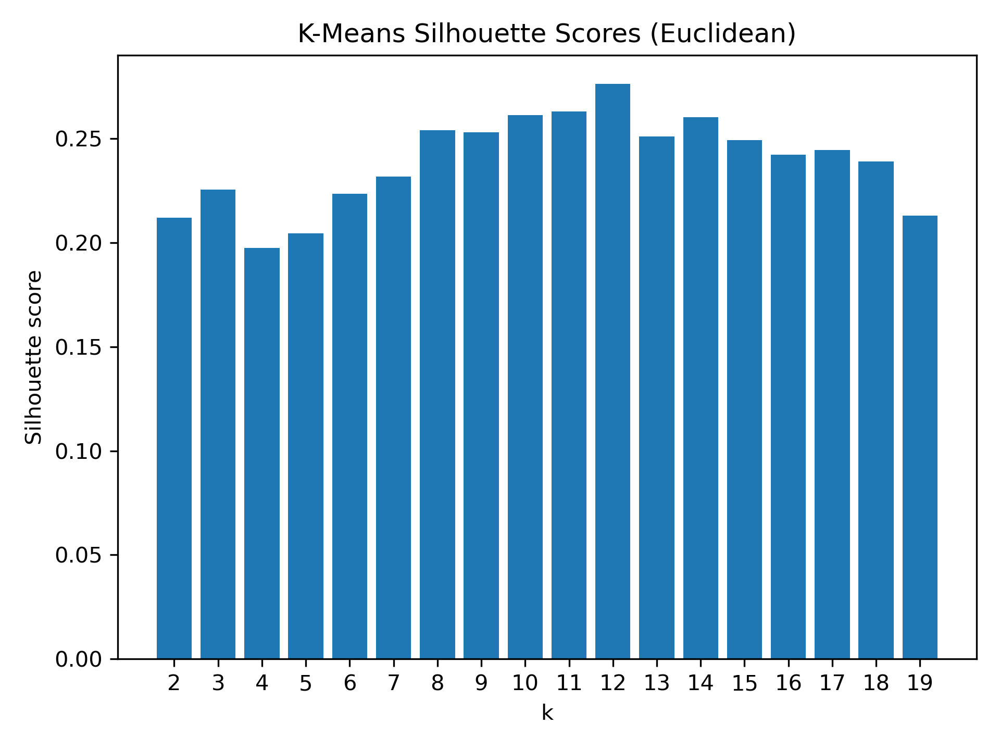
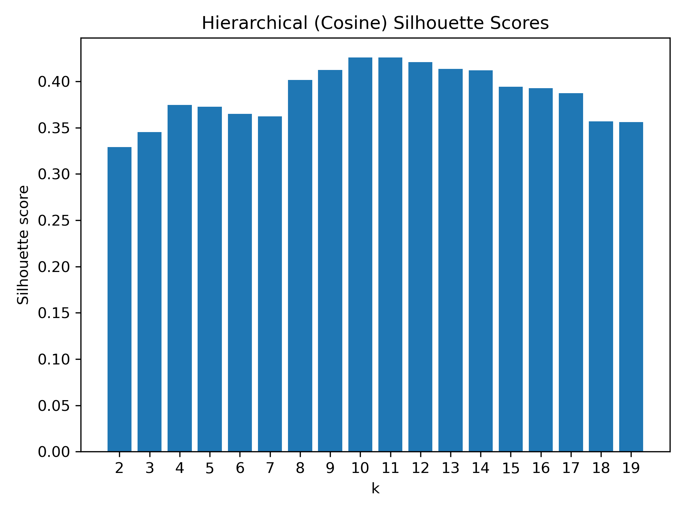
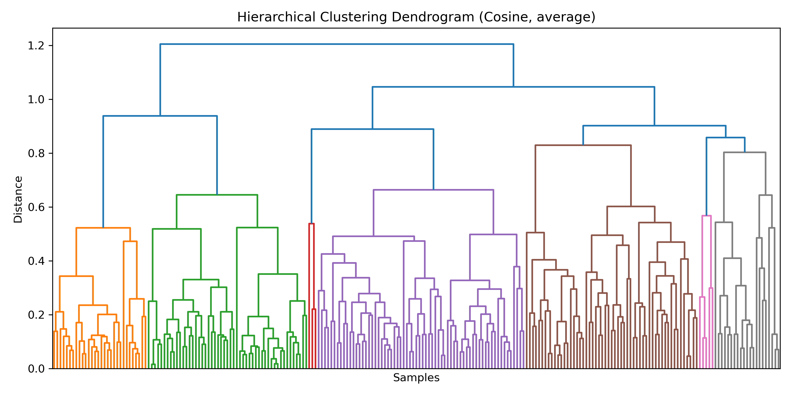

Clustering
Notes: All images displayed on this page are free-use materials, unless otherwise indicated by a specific credit.
Overview
Clustering is an unsupervised learning technique that groups similar data points together based on their characteristics. The purpose of clustering is discovery—it allows us to identify hidden structures, patterns, or natural groupings within the data without relying on predefined labels. There are two major approaches to clustering: partitional clustering and hierarchical clustering.
Partitional clustering (e.g., k-means) divides the dataset into a fixed number of clusters. Each data point is assigned to exactly one cluster, and the algorithm iteratively updates cluster centers to minimize within-cluster distances. This approach is computationally efficient and works well when the number of clusters is known in advance.
Hierarchical clustering builds a tree-like structure (dendrogram) to represent nested groupings of the data. It can be performed in two ways: agglomerative (bottom-up, starting with individual points and merging them into clusters) or divisive (top-down, starting with one large cluster and splitting it into smaller clusters). Unlike k-means, it does not require specifying the number of clusters beforehand, and the dendrogram provides insight into multiple levels of grouping.
A key element in clustering is the distance metric, which defines how similarity between data points is measured. Common metrics include Euclidean distance (straight-line distance in space), Manhattan distance (sum of absolute differences across dimensions), and Cosine similarity (measuring the angle between vectors, useful for text or high-dimensional data). The choice of distance metric can significantly affect the resulting clusters and must be carefully aligned with the nature of the data.
In this project, clustering will be used to explore hidden groupings in the dataset and provide insights that may not be immediately visible through simple descriptive statistics. Specifically, K-Means and hierarchical clustering will be applied to standardized macroeconomic indicators to uncover distinct regimes. The quality and number of clusters will be evaluated using silhouette scores and dendrogram analysis. To validate the discovered groupings, the distribution of regime dummies (
USREC,ZLB_dummy,COVID_dummy) within each cluster will be examined via cross-tabs and donut/pie charts to assess alignment with historical episodes such as recessions, the zero lower bound period, and the COVID-19 era. In addition, cluster-wise and regime-wise scatter plots of unemployment and inflation will be used to evaluate how strongly the short-run Phillips curve relationship is preserved across regimes.

Data Prep
- Clustering methods require only unlabeled numeric data. Unlike supervised learning, where models are trained with predefined labels or categories, clustering is an unsupervised approach that seeks to discover hidden groupings in the data without prior knowledge of class membership. Because of this, categorical labels or outcome variables are not necessary and, in fact, must be excluded during the clustering process to avoid biasing the results. In addition, the input data must be numeric since clustering algorithms, such as k-means and hierarchical clustering, rely on distance or similarity measures (e.g., Euclidean distance, cosine similarity). These measures are mathematically defined only for numerical variables. If the dataset includes categorical or textual features, they need to be transformed into numeric representations (for example, one-hot encoding for categorical variables or vectorization methods for text) before clustering can be applied.
- The sample image of the data used in the analysis on this page is shown below. This dataset corresponds to the one shown in “Merged Cleaned Data” at the end of Data Gathering and Data Cleaning.

- The above dataset can be found here.
Code
- For the code used in this chapter (Clustering), please refer here.
Results
Silhouette Scores of K-Means and Hierarchical Clustering
The silhouette analysis of K-Means clustering (Euclidean distance) shows that the silhouette scores remain relatively modest across all values of k, peaking at about 0.27 when k = 12. This suggests that while K-Means does identify some meaningful separation at this cluster size, the overall cohesion within clusters and separation between clusters is limited. In other words, the structure captured by K-Means is relatively weak, and the method may be less effective at uncovering clear macroeconomic regimes in this dataset.
In contrast, hierarchical clustering with cosine distance yields consistently higher silhouette scores, reaching about 0.42 for k = 11. This indicates that hierarchical clustering provides more coherent and well-separated clusters, making it more reliable for identifying distinct macroeconomic states.
Despite these differences, both methods converge on a similar conclusion: around 11–12 clusters represent a reasonable range for capturing the underlying structure of the data. This agreement suggests that the existence of multiple macroeconomic regimes is robust to the choice of clustering method.
Taken together, both methods point to 11–12 clusters as a reasonable range, but hierarchical clustering is clearly the stronger approach in this application.
In the figures below, the left side shows the results of K-Means Clustering, while the right side shows the results of Hierarchical Clustering.


Hierarchical Clustering Dendrogram
- The figure below is a hierarchical clustering dendrogram based on cosine distance and average linkage. The vertical axis indicates the distance at which clusters merge, with lower values representing greater similarity. Cutting the tree around a distance of 0.6 yields approximately 11–12 distinct clusters, corresponding to different macroeconomic regimes such as normal periods, recessions, and shock episodes.

Conclusions
This study applied both K-Means and hierarchical clustering to macroeconomic data in order to explore hidden structures related to the Phillips curve and regime shifts. The analysis shows that clustering methods can uncover meaningful groupings of economic conditions even without predefined labels.
Silhouette analysis suggests that hierarchical clustering with cosine distance provides more coherent and well-separated clusters than K-Means, with an optimal range of about 11–12 clusters. The dendrogram further highlights natural divisions that correspond to different macroeconomic states.
Across business-cycle phases and policy regimes (recessions, the zero lower bound period, and the COVID-19 era), the negative relationship between unemployment and inflation—the Phillips curve—was generally preserved, though the slope varied in strength across regimes. This indicates that the short-run trade-off remains statistically observable in different contexts.
Regime identification based on clustering aligns with historical episodes. Many clusters are strongly skewed toward one state of the dummy variables (USREC, ZLB_dummy, COVID_dummy), demonstrating that clustering can effectively distinguish between regimes such as normal periods, recessions, ZLB episodes, and the COVID-19 shock.
Taken together, these results suggest that unsupervised clustering techniques, particularly hierarchical clustering, are valuable tools for identifying macroeconomic regimes and for assessing the stability of the Phillips curve relationship under different economic conditions.